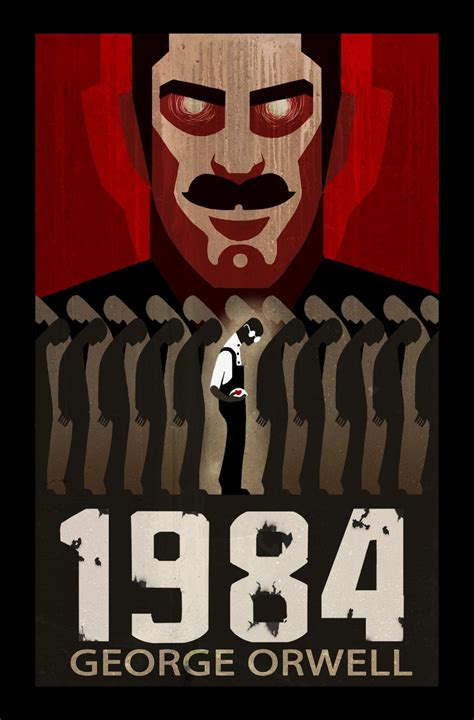
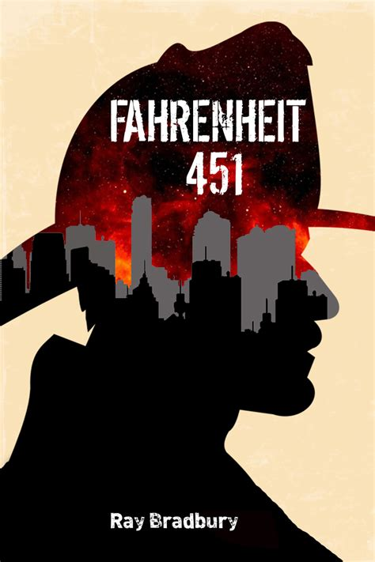
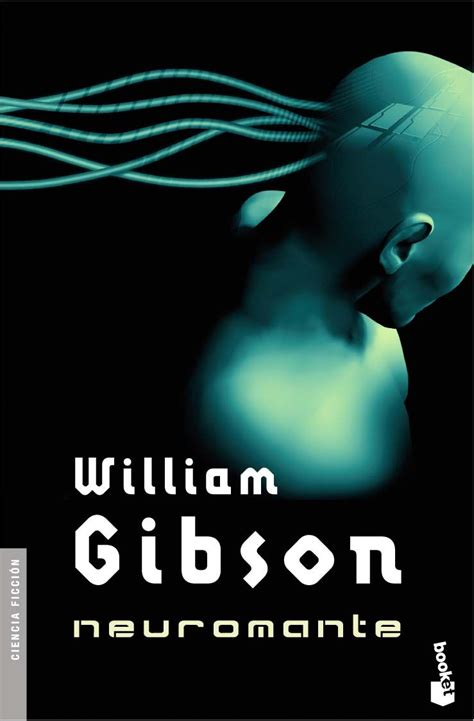

Obras de Ciencia Ficción Escritas por hombres
-

"Dune" - Frank Herbert 1965, es una obra maestra de la ciencia ficción que transporta a los lectores al desértico planeta de Arrakis.
Con una narrativa rica y profunda, Herbert explora temas complejos como la política, la religión y la ecología, creando un universo vasto y detallado que ha cautivado a generaciones de lectores.
Este libro es el primero de una serie que ha dejado una huella indeleble en el género de la ciencia ficción. -
 "1984" - George Orwell 1949, es una obra seminal de la literatura distópica que nos transporta a una sociedad opresiva y totalitaria.
Con una narrativa inquietante y profética, Orwell explora temas como la vigilancia, la censura y la manipulación de la verdad, creando una visión aterradora de un futuro controlado por el Partido.
Este libro ha dejado una marca indeleble en el género, invitando a los lectores a reflexionar sobre la libertad y el poder.
-
 "Fahrenheit 451" - Ray Bradbury 1953, es una poderosa novela distópica que nos transporta a un futuro donde los libros están prohibidos y los bomberos queman cualquier volumen que encuentren.
Con una narrativa apasionante y provocativa, Bradbury examina temas como la censura, la ignorancia y la importancia de la literatura y el pensamiento libre.
Esta obra maestra ha dejado una profunda impresión en la literatura de ciencia ficción y continúa siendo relevante en los debates sobre la libertad de expresión y el control del conocimiento.
-
 "Neuromante" - William Gibson 1984, es una obra pionera del subgénero cyberpunk que nos sumerge en un futuro donde la tecnología y la cibercultura predominan.
Con una narrativa vertiginosa y oscura, Gibson explora temas como la inteligencia artificial, la realidad virtual y las redes globales, creando un mundo fascinante y complejo.
Este libro ha influido profundamente en la cultura popular y ha definido la estética cyberpunk.
-
"El fin de la infancia" - Arthur C. Clarke 1953, es una novela que combina ciencia ficción y filosofía, explorando el futuro de la humanidad bajo la influencia de una avanzada civilización extraterrestre.
Con una narrativa visionaria y provocadora, Clarke nos lleva a reflexionar sobre el progreso, la evolución y el destino de la humanidad.
Esta obra es un clásico indiscutible del género, reconocido por su profundidad y su capacidad para desafiar nuestras percepciones.